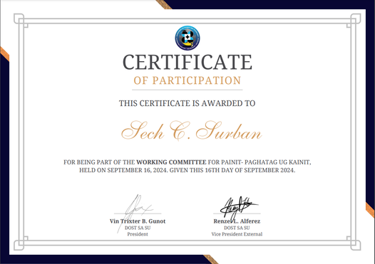
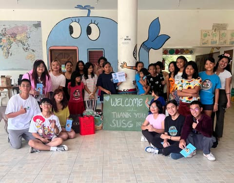
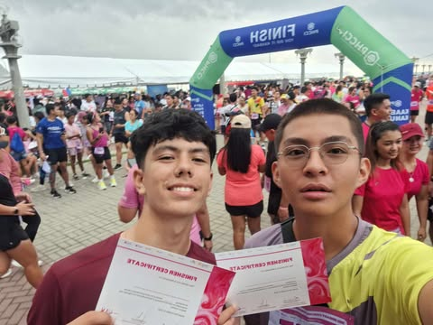
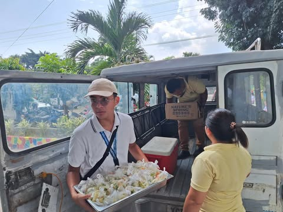
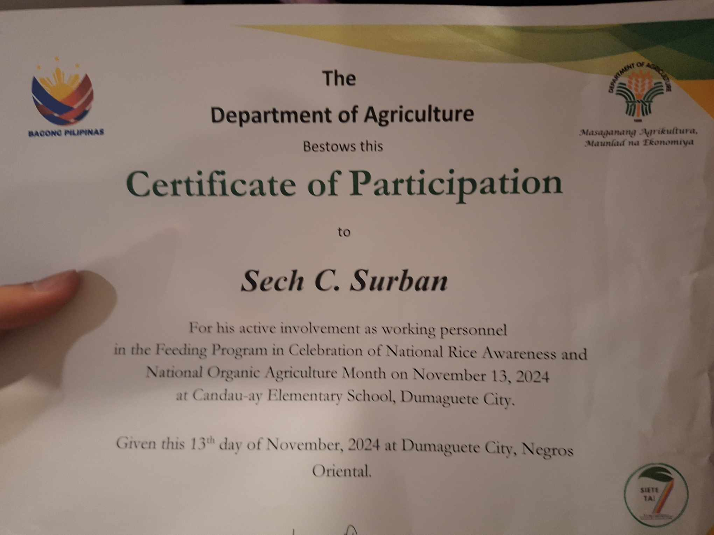
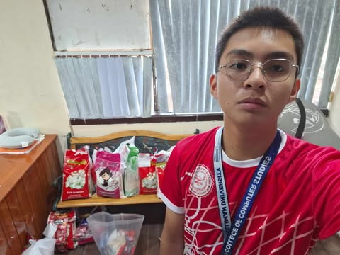

Painit-paghatag og kainit program
Sept 16, 2024 | 8:00 AM By: DOST sa SU (2 points)
The Painit-paghatag og kainit program was organized by the SU DOST to help the silliman faculty and staff during the typhoon. This event was held online using gcash. I donated during this time to make this event possible.
I learned the act of generosity to help the Silliman Faculty. People donated for the faculty since there will be no school without them and we should give back to them in return. The situation is quite alarming since the faculty during the typhoon was still required to work even if there were safety hazards. It surprised me that the dedicated faculty still chose to work despite the ongoing typhoon. It is difficult to see the faculty still doing their duty despite the typhoon so I made a decision to return the favor and give back something. By showing empathy and compassion we could make the situation of the faculty lighter.
My heightened awareness about the faculty being required to go to work despite ongoing natural disasters changed my worldview and seeing their dedication and bravery. I learned that even something small could mean a lot. I would support the faculty during this difficult time. I would donate again but with a bigger amount if possible if the same scenario reoccurs because I care for the faculty of Silliman University.
Because of this activity, I am more empathetic towards the faculty of Silliman University as they are the backbone of this functioning school. We should learn to support them during hard times.

Artistry Arcade: a fundraiser for Bata ng Calabnugan
Sept 29, 2024 | 12:00 PM By: Silliman University Student Government Infomedia Committee (3 points)
During an event in Genesis last August, We set up a donation box for old clothes, old toys, or any pre-loved items that can be used for the orphans in Calabnugan. Fast forward to September 29, 2024 at 12PM after a month of collecting items from the donation box, The SUSG infomedia committee set out to deliver the items to Sibulan, Calabnugan for the Bata ng Calabnugan orphanage. As the logistics-vice head my job was to ensure that the items can be transported safely and to deliver the certificates and documents safely.
The kids in Sibulan were kind hearted and polite that everytime an item was received they would always say thank you and it was very sweet. This taught me to be like them and be more polite and kind. I expected that they would be kind, sweet, and full of joy. It surprised me that they were taught to be polite and well mannered. It was heartwarming that these kids were cared for. The experience showed me the power of giving back and giving blessings to other people. I was inspired by the Ate who cared for these children without any form of payment. It was heartwarming because they never expect anything in return and treated every child equally. I liked the experience as it felt good to give back to the community but it was difficult to see the difficult situation that they were in. I realized that true happiness comes from helping others.
I learned the importance of giving back to the community and It taught me to give more and volunteer if the time is right. I can apply this learning by supporting charity organizations especially to the less fortunate. The benefits of this activity was that It promotes a sense of community and creates a positive impact toward the kids in Calabnugan. If another opportunity like this comes again, I would gladly take it.
Because of this activity, I am more grateful, compassionate, and inspired to make the world a better place. I am more open to the situations of other people and offer help any way I could.

Breast Cancer Awareness Fun Run
Oct 13, 2024 | 5:00 AM By: Rotary Club of Dumaguete. (1 point)
Breast Cancer Awareness Fun Run was an event to set awareness for breast cancer patients. This event started as early as 5:00 AM to as late in the afternoon on October 13, 2024. This was held in Pantawan, Rizal Boulevard. I was a runner in the 10KM category.
I learned proper breathing exercises to avoid getting tired and out of breath from my friend who was with me at the time. I expected it to be a short run since it was only 10 Km. I was wrong. It was very tiring and far from what I expected it to be. I was surprised that my friends were not getting tired and were still very energetic. They were athletes from volleyball and I soon realized I lacked endurance from the start. The activity was inlined to my values of health and community. It opened my eyes to the individuals who were suffering from breast cancer and it showed me the significance of early detection and preventive measures.
I learned the importance of keeping myself in shape and never disregard your mental and physical health. I already applied this learning by going to the gym 3 times a week. I also can apply the learning of breast cancer to other people as it might save other peoples lives. I had fun in this fun run from the people who never left me behind and the encouragement and inspiration. I plan to participate in another fun run as it is good for my health and is beneficial for the charity. This activity has several benefits like physical exercise and awareness regarding breast cancer.
Because of this activity, I am more motivated to live a healthier lifestyle and make a positive impact on my community by sharing awareness regarding not only breast cancer but any cancer related illnesses.
 
Feeding Program in Celebration of National Rice Awareness and National Organic Agriculture Month
Nov 13, 2024 | 10:00 AM By: Department of Agriculture - Central Visayas (2 points)
This activity was a feeding program that was organized by The Department of Agriculture in celebration of National Rice Awareness Month. This was on Wednesday (Nov. 13) 11:00 AM. This program lasted around 3 hours since there was still an orientation about Rice consumption, wastage, and production by Alejandro “Boy” Rafal, who was the Agricultural Representative in the Negros Island Region before the feeding. We were accompanied by the people of the Department of Agriculture in making the feeding in Candau-ay Elementary School successful. The activity was to inform the parents, teachers, and students about the rice farmers, rice wastage, and production cost of rice and to provide nutritious meals for the selected 220 learners who are nutritionally at-risk and underweight. My role in the activity was to help prepare, distribute, and manage the food to the learners.
My expectations for the event was only to provide food for the learners but instead it exceeded my expectations by also sharing information about rice wastage which was an eye opener for me. I was actually surprised by the level of preparedness the organization(DA PATCO) had for this activity. Sir Rafal actually missed an equally important event for this event and there was also a mascot inorder to entertain the kids, and lastly there were 3 performances organized by the school for that activity. I liked the experience of seeing what was happening in Candau-ay Elementary school. It was sweet and inspiring that we could see their talents and appreciation. I found it hard to see that the rations were incomplete leaving other learners with incomplete meals.
During the lecture, I learned about the rice farmers in Negros Oriental that they produce around 35,000 metric tons of rice but the yearly requirement for the region is around 116,000 metric tons due to that we need to buy imported rice from other sources. They also mention that 1 tablespoon of rice per person per day is wasted. We need to learn not to waste our rice since we are already lacking in production of rice yet we are still wasting a lot of rice. I practice myself to only eat what I can finish and leave no rice to waste. I also encourage others to buy from our rice farmers so that their rice will not go to waste. I would still continue my involvement in DA PATCO and their activities because I know that they are doing their jobs to help the farmers and people. I see the benefits of this activity because it actively helps the farmers and students that are in need and also informs the parents and teachers about what is happening to our rice in the Philippines.
Because of this activity, I am a more food wise person who doesn't like wasting rice or food in order to lessen food waste. I would also encourage everyone to also buy local rice to aid the farmers in our region. I am a grateful person to experience and help this activity become a successful one.

PEP White gift donation
Nov. 15, 2024 | 1:00 PM By: Personality Enhancement Program (1 point)
The PEP White Gift donation was a group requirement for the PEP subject. This event was held on November 15, 2024 at 1:00PM at the PEP room. The objective of this event was to provide white gifts to donate to the less fortunate.
I learned a valuable skill of giving. As expected I gave the white gifts to the PEP room and was gathered in order to be donated when the right time comes. It affected my worldview as a person because even a small amount can be a blessing towards other people. Since we were a lot, more people could be blessed when the donation ends. It made a strong impression to me that something like this could be important and teaches us the value of giving and generosity. I liked the experience because we worked as a group to make this possible. Many other groups also contributed to the donation making a great difference for the community.
I deeply understand the power of giving. I learned that even a small amount could be a huge blessing for other people. If everyone donated something small the quantity would be a lot. This could change a person's life if not make his or her day. I learned to donate if given the chance so that I could share my blessings and lend a helping hand. There is no particular group mentioned but I would donate again next year. The benefits of this event is helping the less fortunate with white gifts.
Because of this activity, I am a more generous and understanding person. I would donate to more charities if possible and help more people.